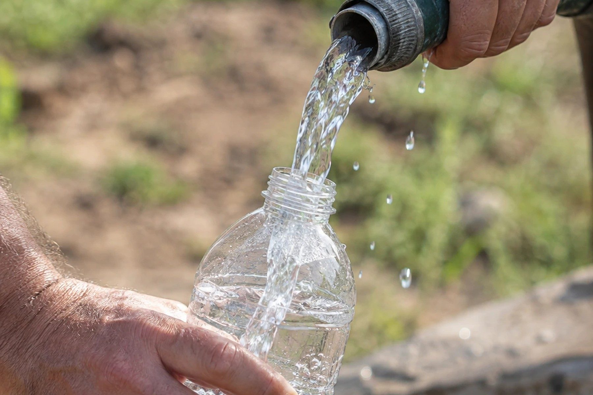

Анализ воды из скважины: когда и на что сдавать
Вода из новой скважины может выглядеть идеально и не проходить по железу, жёсткости или микробиологии — а для Кузбасса это типичный природный фон. Разбираем, какие показатели брать и что каждый говорит.
Вода из новой скважины может быть прозрачной, без запаха и приятной на вкус — и при этом не проходить по железу, жёсткости или микробиологии. Внешний вид почти ничего не говорит о фактическом составе: часть отклонений органолептически не ощущается вовсе, а часть, наоборот, ощущается там, где формально всё в порядке. Единственный способ узнать, что на самом деле течёт из крана, — лабораторный анализ. Разбираем, когда его делать, какие показатели заказывать и что каждый из них означает — с поправкой на то, что для Кузбасса нормально, а что нет.
Когда сдавать воду на анализ
Есть три момента, когда анализ имеет смысл — не «на всякий случай», а по конкретному поводу.
После освоения скважины. Когда прокачка завершена и вода перестала быть мутной от бурового шлама, разумно сделать первый анализ — он фиксирует стартовое состояние воды на этом конкретном участке и становится точкой отсчёта, с которой в будущем можно будет сравнивать. Без этой точки отсчёта любой более поздний разговор «раньше вода была лучше» остаётся на уровне ощущений, а не фактов.
После ремонта или чистки скважины. Это не просто хорошая практика, а прямое требование. Пункт 89 СанПиН 2.1.3684-21 предписывает: после каждой чистки или ремонта источника нецентрализованного водоснабжения должна проводиться дезинфекция водозаборного сооружения с последующей промывкой и контролем качества и безопасности питьевой воды. То есть анализ после вмешательства в конструкцию скважины — не инициатива владельца, а часть правильно выполненной процедуры чистки или ремонта.
При изменении вкуса, запаха, цвета или напора. Любое заметное изменение — повод для внепланового анализа, а не для ожидания, что «само пройдёт». Если запах воды новый и резкий, точечная диагностика самого запаха как симптома разобрана отдельно в статье откуда берётся запах воды из скважины — там симптом ведёт к вероятной причине; здесь же речь о том, что заказать в лаборатории, чтобы подтвердить или опровергнуть предположение цифрами, а не запахом на глаз.
Вне этих трёх поводов разумной практикой можно считать периодический контрольный анализ — раз в год или раз в два года, в зависимости от того, что показали предыдущие протоколы: если состав воды стабилен, реже можно и подождать, если между анализами появилась заметная разница, стоит разобраться, откуда она взялась, до того как это станет бытовой привычкой.
Базовый набор показателей
Для скважины на воду для дома лабораторный набор обычно делится на три группы, и заказывать имеет смысл все три, а не только ту, что кажется самой тревожной.
Органолептические показатели — то, что в принципе можно почувствовать: запах, привкус, цветность, мутность. Это самая доступная для восприятия группа, но именно поэтому на неё нельзя полагаться как на единственный индикатор: часть проблем органолептически не ощущается вовсе.
Физико-химические показатели — то, что определяет пригодность воды для питья и бытового использования технически, а не на вкус: жёсткость (влияет на накипь, работу бытовой техники и стиральных машин, ощущение мыла на коже), общее железо и марганец (типичный природный фон для региона, о котором подробнее ниже), сухой остаток или общая минерализация (сколько растворённых веществ в воде в целом), водородный показатель pH, содержание нитратов и фторидов, окисляемость перманганатная (косвенный индикатор органического загрязнения).
Микробиологические показатели — присутствие бактерий, в первую очередь показателей фекального загрязнения (общие колиформные бактерии, термотолерантные колиформные бактерии). Для скважины это особенно значимая группа: правильно построенная и герметичная конструкция должна защищать горизонт от поверхностного загрязнения, и микробиологический анализ — практический способ проверить, что эта защита действительно работает, а не только предполагается по паспорту.
Точные числовые нормативы по каждому из перечисленных показателей устанавливает СанПиН 1.2.3685-21 — но конкретные пороговые значения по разделу III этого документа в статье сознательно не приводятся: числа в открытых пересказах расходятся между собой, а официальный текст с учётом всех действующих изменений требует отдельной сверки перед публикацией. Действующий норматив по каждому конкретному показателю правильнее уточнять непосредственно в лаборатории при заказе анализа — вместе с протоколом там обычно указывают и то, укладывается результат в норматив или нет, без необходимости искать таблицу самостоятельно.
Что добавить в угольном районе
Стандартного набора выше достаточно для большинства случаев, но у участков в угледобывающих районах региона — рядом с действующими разрезами, золоотвалами, старыми подработанными территориями — есть основание расширить список. По данным регионального доклада о состоянии подземных вод Кузбасса, в зонах влияния подобных объектов фиксируются локальные превышения по показателям, которые в стандартный бытовой набор обычно не входят: нефтепродукты, сульфаты, отдельные металлы, а в ряде мест — фенолы. Конкретные примеры такой локальной специфики — золоотвалы у Калтана, зона влияния угольных разрезов у Красного Брода — разобраны отдельно в материалах про эти районы: бурение в Калтане, скважина рядом с угольным разрезом.
Практический вывод: если участок расположен рядом с действующим или отработанным промышленным объектом угольной отрасли, разумно заранее спросить в лаборатории о расширенном пакете анализа, а не ограничиваться базовым набором по умолчанию, — точный список того, что стоит добавить именно для своего участка, лучше уточнить с учётом его конкретного расположения, а не выбирать вслепую по общему списку возможных загрязнителей.
Природный фон Кузбасса: что нормально для региона, а что нет
Это отдельный и важный момент, из-за которого протокол анализа воды из скважины на юге Кузбасса не всегда стоит воспринимать как приговор конструкции или подрядчику. По выводу регионального доклада о состоянии окружающей среды, подземные воды области в естественном, ничем не потревоженном состоянии отличаются умеренной или повышенной жёсткостью, как правило — повышенным содержанием железа и марганца, а также недостатком или отсутствием фтора. Это не брак отдельной неудачной скважины, а фоновая характеристика подземных вод региона в целом — от мелких приповерхностных горизонтов до глубоких пластов.
Практическое значение этого факта: если протокол анализа показывает отклонение именно по железу, марганцу или жёсткости, — прежде чем предъявлять претензию буровой компании, разумно понимать, что для этого региона такое отклонение статистически ожидаемо, а не редкое исключение. Это не означает, что отклонение можно игнорировать: превышение по этим показателям всё равно нежелательно для качества питьевой воды и требует решения — обычно через водоподготовку, а не через повторное бурение. Но диагноз здесь другой: не «скважина сделана плохо», а «вода в регионе в естественном виде часто требует доочистки», и понимание этой разницы экономит и нервы, и деньги на ненужных претензиях не по адресу.
А вот дефицит фтора — обратная по знаку особенность: здесь показатель не завышен, а занижен относительно оптимального для здоровья уровня, и это тоже часть регионального фона, а не индивидуальная аномалия конкретной скважины.
Как правильно отобрать пробу

Результат анализа зависит не только от того, что в воде есть на самом деле, но и от того, насколько правильно взята сама проба, — ошибка на этом этапе способна исказить итог сильнее, чем реальное состояние воды.
Несколько практических правил, которые обычно даёт сама лаборатория вместе с тарой для пробы, но которые полезно знать заранее: тару для микробиологического анализа предоставляет лаборатория — она стерильна, и использовать для этих целей обычную бытовую бутылку нельзя, результат будет недостоверным из-за постороннего загрязнения тары. Перед отбором пробы кран или излив нужно на несколько минут открыть на полный напор, чтобы вода из крана соответствовала составу воды в стволе скважины, а не воде, застоявшейся в трубе с прошлого использования. Саму тару заполняют, стараясь не касаться горлышка руками и не задевать им кран, — особенно важно для микробиологической пробы, где посторонний контакт способен добавить бактерии, которых в самой скважине нет. Пробу для микробиологического анализа нужно доставить в лабораторию в ограниченное время, обычно в течение нескольких часов, и по возможности в охлаждённом виде — иначе результат покажет не состояние воды на момент отбора, а то, что успело размножиться в таре за время хранения.
Если сомнения в чистоте отбора есть, разумнее уточнить процедуру непосредственно у лаборатории перед визитом, чем полагаться на общую память о том, «как обычно это делают», — процедура и требуемый объём пробы у разных лабораторий и по разным показателям могут отличаться.
Что делать с результатом
Протокол анализа — не самоцель, а основание для решения. Если по всем показателям результат укладывается в норматив, это подтверждённый факт, который стоит сохранить вместе с паспортом скважины: полный набор документов на скважину, включая паспорт и протоколы анализов, разобран в статье документы на скважину.
Если есть отклонения, дальнейший шаг зависит от того, какие именно показатели вышли за норматив и насколько. Природный фон региона (железо, марганец, жёсткость, дефицит фтора) обычно решается подбором водоподготовки под конкретные цифры протокола — это вопрос к специалистам по фильтрации, а не к буровой компании напрямую. Показатели, указывающие на возможное загрязнение извне, — микробиология, нефтепродукты, необычно высокие концентрации отдельных металлов — повод разобраться в источнике проблемы, а не сразу переходить к фильтрам: если причина в негерметичности конструкции скважины, установка фильтра решит симптом, но не причину.
Заказать лабораторный анализ воды и, если понадобится, подбор фильтрации по результатам протокола можно при обращении в сервис компании.